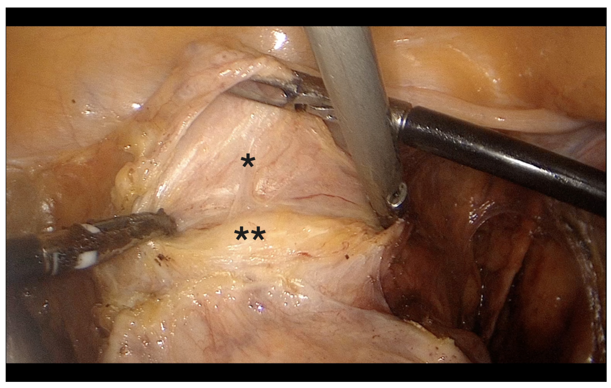

Página 1 · Parte 1 · Fístulas genitais
Uma comunicação que não deveria existir
Entre a bexiga e a vagina existe uma parede. O que acontece com a paciente quando essa parede deixa de existir num ponto — e por que esse buraco ganha nome, classificação e conduta próprios?
O recorte: por que dois temas periféricos ainda valem uma parada
Fístulas genitais e síndrome da bexiga dolorosa são temas que aparecem excepcionalmente em prova. Isso precisa ser dito de saída, e é para tranquilizar, não para desanimar: são dois assuntos que cobram pouco espaço de estudo porque ocupam pouco espaço de banca. Só que essa mesma raridade tem uma consequência prática que joga a favor — quando caem, caem sempre pelo mesmo ângulo. Não existe questão exótica de fístula vesicovaginal; existe a questão de sempre. O caminho eficiente, portanto, é o inverso do que se faz num tema grande: em vez de varrer tudo, deter-se com precisão naquilo que comumente aparece, e saber que aquilo basta.
Fístula é o nome de uma comunicação que não deveria existir
O termo fístula designa uma comunicação anormal entre duas estruturas. Essa é a definição-mãe e ela vale para qualquer fístula do corpo — entre alças intestinais, entre uma artéria e uma veia, entre um órgão oco e a pele. O que muda de uma para outra são os dois endereços que se comunicaram. Guarde a estrutura da frase: duas estruturas que normalmente estão separadas, e uma passagem entre elas que a anatomia não previu. Aplicada ao compartimento anterior da pelve feminina, a definição vira o nome que interessa: fístula vesicovaginal (FVV) é a comunicação anormal entre a bexiga e a vagina. Não é um orifício que "aumentou", não é uma parede que "afinou" — é um trajeto, um túnel epitelizado ligando dois lúmens, e é por ele que a urina passa a escoar continuamente para onde nunca deveria chegar.
As duas que interessam: vesicovaginal e ureterovaginal
Entre todas as fístulas genitais, a que merece destaque em prova é a vesicovaginal — é nela que o estudo se concentra e é ela que responde pela imensa maioria das questões. A segunda, e a única outra que eventualmente aparece, é a fístula ureterovaginal (FUV): a comunicação entre o ureter e a vagina. Essas duas não convivem por acaso na mesma página. Elas são o par de diferencial que estrutura a metade inteira, porque produzem a mesma queixa — urina escoando pela vagina — a partir de dois endereços diferentes. E é exatamente essa a pergunta que se persegue do conceito até a conduta: de onde vem a urina que chega à vagina? Da bexiga, e então é vesicovaginal; ou do ureter, e então é ureterovaginal. Toda a investigação existe para responder a essa única pergunta, e toda a conduta muda conforme a resposta. Se você segurar isso, o resto do raciocínio se encaixa sozinho.
A mesma parede, um terceiro jeito de falhar
A comunicação se instala na parede que separa bexiga e vagina — o septo vesicovaginal, a lâmina de tecido conjuntivo que mantém os dois compartimentos íntegros e impede que eles conversem. É a mesma parede anterior que sustenta o mecanismo de continência ↗A7 e que serve de estrutura de suporte quando o assoalho cede ↗A8. A diferença está no modo de falhar. No compartimento anterior, o assoalho falha de três maneiras distintas: quando não segura — e a paciente perde urina ao esforço ou à urgência ↗A7; quando desce — e a parede prolapsa ↗A8; e quando comunica — que é o assunto daqui. As duas primeiras são falhas de função e de sustentação; a terceira é uma falha de continuidade: não é que a bexiga não retenha, é que existe um caminho aberto por onde a urina sai antes de chegar à uretra. Vale registrar a fronteira de vocabulário, porque as duas coisas moram no mesmo lugar e não são a mesma: o septo vesicovaginal é a lâmina entre os dois órgãos, e é dele que se fala aqui; a camada de suporte da parede vaginal anterior — aquela cuja falha produz o prolapso — é outra estrutura, com outro nome e outra conversa ↗A8. No diferencial da perda urinária, a fístula é o padrão da perda contínua — ali ela é um dos quatro caminhos possíveis ↗A7. Daqui em diante ela deixa de ser um sinal a reconhecer e passa a ser a doença: com classificação própria, mecanismo próprio, régua de tamanho e conduta próprios.

A bexiga mobilizada (*) permanece separada da parede vaginal anterior (**), expondo a interface conjuntiva vesicovaginal que impede comunicação entre os dois lúmens.
O asterisco simples marca a bexiga; o duplo marca a parede vaginal anterior. A borda do manipulador, visível atrás da parede vaginal, localiza o fórnice anterior e confirma a orientação da vagina. A faixa entre a face inferior da bexiga e a parede vaginal é o plano conjuntivo vesicovaginal a ser cueado.
Na anatomia íntegra, os lúmens urinário e vaginal permanecem separados pelas paredes dos dois órgãos e pelo tecido conjuntivo interposto. A fístula vesicovaginal rompe transversalmente essa barreira. Não confundir com o plano vesicouterino, mais cranial, nem com o septo uretravaginal, mais caudal. Por precisão anatômica, a anotação deve nomear “plano/barreira vesicovaginal”, sem desenhá-lo como um ligamento isolado uniforme.
Lampé R, Margitai N, Török P, Lukács L, Orosz M. “Mobilization of the urinary bladder”, Figure 5. Diagnostics. 2025;15(14):1736. CC BY 4.0. DOI: 10.3390/diagnostics15141736. Acesso em 28/07/2026. Recorte e cueing em PT-BR adicionados; anatomia e cores originais preservadas.
Quiz — fixação
A definição que melhor descreve o que é uma fístula vesicovaginal é:
- Gabarito B. Fístula é, por definição, comunicação anormal entre duas estruturas — e a vesicovaginal é a que liga bexiga a vagina. A virada é entender que o problema não é de função nem de sustentação: é de continuidade, existe um trajeto onde deveria haver parede íntegra.
- (A) descreve o mecanismo da incontinência de esforço — a uretra não segura contra o aumento de pressão, mas não há passagem anormal nenhuma; a urina sai pelo caminho certo, na hora errada.
- (C) descreve o prolapso da parede anterior: a parede desceu, não se comunicou; os dois lúmens continuam separados.
- (D) descreve a incontinência por transbordamento — bexiga que não esvazia e extravasa, também sem trajeto anormal.
- Por que cair na (C): a mesma parede anterior é palco das três coisas, e o aluno associa "problema na parede vaginal anterior" a "prolapso" no automático — esquecendo que descer e comunicar são falhas diferentes da mesma estrutura.
Uma paciente refere saída contínua de líquido pela vagina após cirurgia pélvica. A pergunta que organiza toda a investigação a partir daqui é:
- Gabarito C. As duas fístulas do par produzem a mesma queixa a partir de endereços diferentes; localizar a origem é o que define exame seguinte e conduta.
- (A) caracteriza padrões de incontinência (esforço, urgência) — na fístula a perda é contínua, sem ritmo, e essa pergunta não separa vesical de ureteral.
- (B) investiga retenção/transbordamento, um ramo diferente do diferencial da perda ↗A7.
- (D) é medida urodinâmica, sem papel na localização de um trajeto fistuloso.
- Por que cair na (A): o reflexo treinado no diferencial da perda urinária é caracterizar como a paciente perde; aqui a caracterização já foi feita (é contínua) e a pergunta útil mudou de "como perde" para "de onde vem".
Duas fístulas podem ter o mesmo tamanho e a mesma localização e ainda assim ter prognósticos opostos — o que as separa não é a fístula, é o que a abriu.